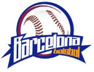
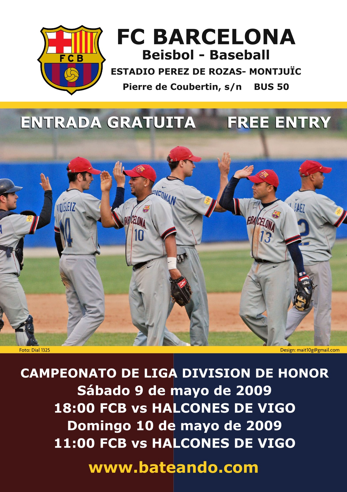
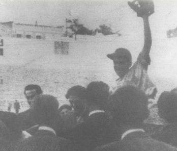

HISTORY 1931 - 2012 - 2020
The Barcelona Baseball Softball Club was born after the decision of FC
Barcelona
to eliminate
its Baseball section. On June 1, 2011, the secretary of the FC Barcelona Board of Directors, Toni Freixa,
announced at a
press conference a series of economic measures in favor of its “economic sustainability”. Among the measures
was
the
announcement of the closure of the Baseball Section after 80 years of history.


The first steps of the section were taken in June 1931 long before roller hockey or handball. La Secció experienced many
vicissitudes with a brilliant time with 3 league titles in 1946, 1947 and 1956 which was followed by a long period that
culminated in relegation to the 1st Division.

The promotion to the Division of Honor represents a boost from the FC Barcelona board of directors, which provides the
Section with more resources. The results are immediate and all categories from the smallest to the Honor Division team
improve their results.
The Section develops different promotional actions to get new players that allow feeding the
lower categories of both practitioners and coaches, monitors, delegates, etc. For the first time in many years, the
different categories of FC Barcelona are protagonists in both the Catalan and Spanish Championships and the Honor
Division team round the title until they get it in 2011. Despite the “exit” from FCB, the Club already as a Baseball
Club Barcelona continues to reap success from 2012